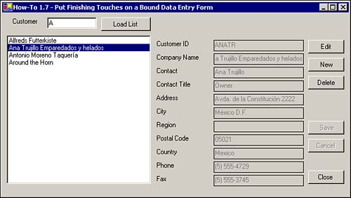
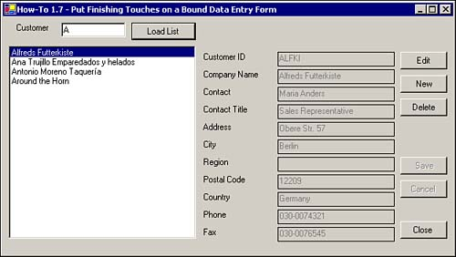

Besides handling the basics, you need to add some finishing touches to a data entry form, such as enabling/disabling controls based on whether you're on a record. This How-To shows you how to use the Enabled properties on controls to give the user more direction when using a Windows form (see Figure 1.12).

Although the majority of the major issues are taken care of for the form you created so far in the chapter, your users become confused about when to push some of the buttons. How do you get the buttons to reflect when the users can click them, and what other finishing touches might help the form?
An important part of user interfaces is letting the user know when he has access to certain features on the form. In this case, you will see how to do the following:
Toggle the enabled property of the btnSave, btnCancel, btnNew, and btnDelete at the appropriate moments, such as when a record is highlighted in the list box.
Add a command button to close the form.
Add code to the Closing event of the form that tests whether you have made changes to the current record, and if so, whether you want to save the changes.
You can see an example of particular command buttons being enabled based on the current action being performed in the form in Figure 1.13.

Continuing on with the form that you have been using, you are going to make the changes just mentioned in the previous bulleted list.
Start by modifying two routines already created: RefreshIndividual and ActivateEditing subroutines. Then check whether a customer has been selected in lstCustomers. If not, then the two buttons, btnEdit and btnDelete, are disabled. If a customer hasn't been selected, the two buttons are enabled, and the dsCustomerIndividual dataset control is refreshed.
Private Sub RefreshIndividual()
'- Clear individual customer dataset
Me.dsCustomerIndividual.Clear()
If lstCustomers.SelectedIndex = -1 Then
btnEdit.Enabled = False
btnDelete.Enabled = False
Else
btnEdit.Enabled = True
btnDelete.Enabled = True
Me.odaCustomerIndividual.SelectCommand.Parameters(0).Value =
lstCustomers.SelectedItem(0)
'- Fill the dataset
Me.odaCustomerIndividual.Fill(Me.dsCustomerIndividual, "Customers")
End If
End Sub
Similarly, you will add code to the ActivateEditing subroutine to toggle the Enable property of the various command buttons, depending on their purpose. Listing 1.20 shows the entire routine.
Private Sub ActivateEditing(ByVal bEnable As Boolean)
Dim oCurr As Object
'- Loop through each of the controls on the form
For Each oCurr In Me.Controls()
'- Check to see if the control is a text box
If TypeOf oCurr Is TextBox And oCurr.Name <> "txtCustLimit" Then
'- If so, toggle the properties
If bEnable Then
oCurr.BorderStyle() = _
System.Windows.Forms.BorderStyle.Fixed3D
oCurr.BackColor() = System.Drawing.Color.White
Else
oCurr.BorderStyle() = _
System.Windows.Forms.BorderStyle.FixedSingle
oCurr.BackColor() = Me.BackColor
End If
oCurr.Enabled = bEnable
End If
Next
'- Enable/Disable the appropriate buttons
btnEdit.Enabled = Not bEnable
btnNew.Enabled = Not bEnable
btnDelete.Enabled = Not bEnable
btnCancel.Enabled = bEnable
btnSave.Enabled = bEnable
'- Set the focus to the CustomerID text box
If bEnable Then
Me.txtCustomerID.Focus()
End If
End Sub
The specific lines of code added are shown here:
'- Enable/Disable the appropriate buttons
btnEdit.Enabled = Not bEnable
btnNew.Enabled = Not bEnable
btnDelete.Enabled = Not bEnable
btnCancel.Enabled = bEnable
btnSave.Enabled = bEnable
These buttons are handled as the other buttons are-by taking the opposite value to which bEnable is currently set, and using it to toggle the Enabled property.
Finally, if the bEnable flag is True, then focus is moved to the txtCustomerID text box using the following lines of code:
'- Set the focus to the CustomerID text box
If bEnable Then
Me.txtCustomerID.Focus()
End If
End Sub
Add a new command button, with the properties Name and Text set to btnClose and &Close, respectively. Place the code in Listing 1.21 for the Click event.
Private Sub btnClose_Click(ByVal sender As System.Object, _
ByVal e As System.EventArgs) Handles btnClose.Click
Me.Close()
End Sub
Add some code to the Closing event of the form. Listing 1.22 tests whether the btnSave button is enabled. If it is, the MessageBox method is evoked, asking the user if he wants to save changes that were made. If so, then the SaveRecord is called within a Try...Catch...End Try block.
Private Sub frmHowTo1_7_Closing(ByVal sender As Object, _
ByVal e As System.ComponentModel.CancelEventArgs) Handles MyBase.Closing
'- If an edit or add has been requested, enabling the Save button,
' then prompt to save the record
If btnSave.Enabled Then
If MessageBox.Show("Would you like to save the current record?", _
"Save Record?", MessageBoxButtons.YesNo) = _
DialogResult.Yes Then
Try
'- Save the information
SaveRecord()
Catch saveException As Exception
If MessageBox.Show("The following error has occurred: " &
saveException.Message & vbCrLf & vbCrLf & _
"Continue with closing the form?", "Error Saving Record",
MessageBoxButtons.YesNo) = DialogResult.No Then
e.Cancel = True
End If
End Try
End If
End If
End Sub
In the modifications made to the form in this How-To, many things happen depending on what is occurring. When the user clicks the btnEdit button, btnEdit, btnNew, and btnDelete are disabled, and btnCancel and btnSave are enabled. The opposite is true when btnCancel and btnSave are pressed. If bEnable is True, then the focus is moved to the txtCustomerID text box.
When the txtClosed button is clicked, the application then checks whether the btnSave command button has been enabled, meaning data is being edited. If so, then the user is asked whether he wants to save the current record. If the user does, the system then saves the current information back to the server.
The tasks displayed in this How-To are just a few of the tasks you can do to make your forms look and feel more professional. They are also what users come to expect from database applications.
Play with the form a bit more. You're sure to come up with a few more ideas.